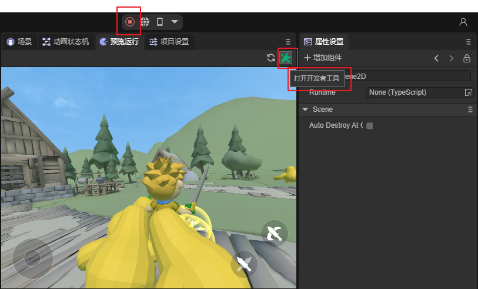
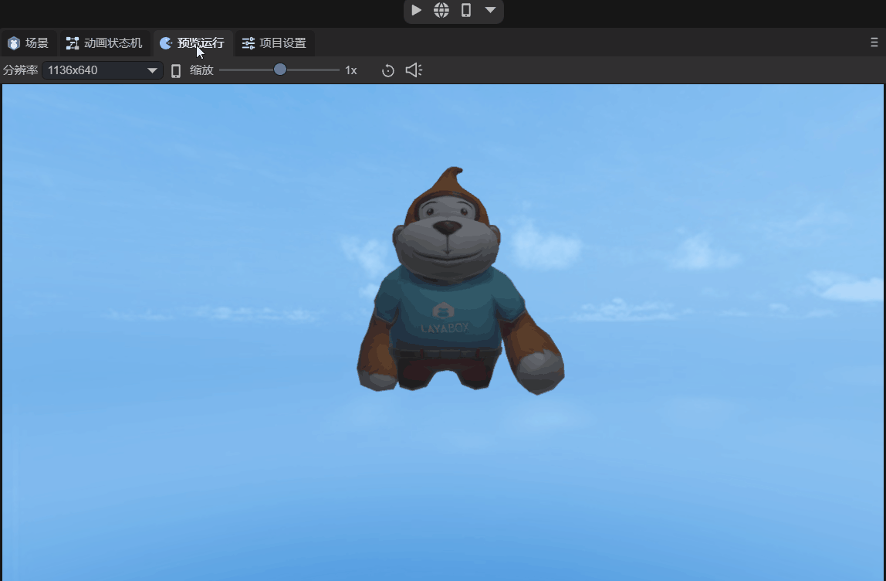

预览运行面板说明
一、项目预览
1.1 预览运行
项目预览用来查看项目在不同环境中的运行效果。项目预览分为三种模式，分别是IDE内预览，浏览器预览，移动端预览。如图1-1所示。

（图1-1）
预览相关的快捷键可以参考一下《IDE快捷键与鼠标交互操作大全》的1.5节。
在开启IDE内预览后会出现两个按钮，分别是重新启动和打开开发者工具：
重新启动顾名思义，对当前预览运行场景进行重启，如图1-2所示。

（图1-2）
点击打开开发者工具会调出Developer Tools，方便开发者进行调试，也可以通过 Ctrl + Alt + I 快捷键来打开开发者工具。

（图1-3）
1.2 预览运行的入口
启动场景在构建发布里进行线上版本的发布后，毫无疑问是作为项目的入口来率先加载与显示的。如图1-4所示，在构建发布中设置启动场景。

（图1-4）
但是在项目预览运行调试的时候，有的时候并不希望将启动场景优先显示，这会使得调试流程变的很长。所以，点击图1-5红圈中的下拉箭头，可以通过点击勾选的方式，将启动场景或者当前场景作为预览运行的入口。

（图1-5）
当前场景是指，当前在IDE里正处于打开编辑状态的场景。
二、IDE预览运行面板的作用
2.1 不运行时
先自定义界面布局，将预览运行窗口按如动图2-1所示的方式拖动，方便观察效果。

（动图2-1）
这样布局的好处，可以方便开发者进行UI布局排版，这也是预览运行窗口在不运行时的一个作用。如动图2-2所示，在场景面板中，是无法同时显示2D与3D界面的，假如我想在模型下显示一个标签，并且需要将它们的位置对齐，这时就需要在预览运行窗口中观察效果。

（动图2-2）
实际上，在点击运行按钮之前，预览运行窗口只是不执行脚本，其它的效果都会显示。比如粒子效果，如动图2-3所示，但是为了效率，粒子效果在预览运行窗口不会实时显示，它是隔一段时间刷新一次。

（动图2-3）
2.2 运行时
点击运行后，就会连脚本也运行。如动图2-4所示，点击运行按钮会自动跳转到预览运行界面，这里给Main Camera添加了一个通过鼠标和键盘来控制摄像机的脚本（参考文档《使用3D精灵》第六节），如果不点击运行，那么这个脚本就不会被执行。

（动图2-4）
三、预览运行面板的功能
3.1 分辨率
不运行时，如动图3-1所示，预览运行的分辨率就是项目设置中的分辨率。

（动图3-1）
如果是运行时，分辨率有多种选项可以选择，如动图3-2所示，还可以自己创建选项，Dimensions是选项的名称，点击对勾后，就可以设置需要的分辨率数值了。

（动图3-2）
3.2 横屏和竖屏
运行时，点击如动图3-3所示的图标，可以切换横屏和竖屏显示。

（动图3-3）
3.3 缩放、恢复1X
预览运行面板支持缩放，还可以快速恢复为1倍大小，操作如动图3-4所示。

（动图3-4）
3.4 静音
如果项目中有音频，则点击如动图3-5所示的图标，在预览运行时将会静音演示。

（动图3-5）